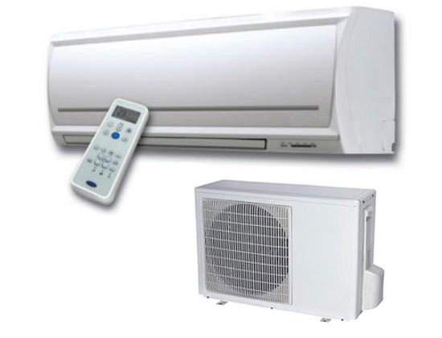

Instalaciones Eléctricas
Instalaciones Eléctricas Duración: 10 meses
Este curso está orientado a la preparación de técnicos instaladores electricistas, los cuales estarán capacitados para calcular y realizar instalaciones eléctricas domiciliarias e industriales, realizar tableros para el arranque y motores trifásicos, contactores, etc.
Taller
El tester. Uso del tester. Circuitos eléctricos. Armado de distintos circuitos. Armado de la lámpara serie. Uso de la serie. Armado de circuito de contactores.
Teoría de electricidad
Teoría atómica. Unidades electicas fundamentales. Leyes eléctricas. Resistores. Circuitos básicos. Potencia eléctrica. Calculo de circuitos eléctricos. Capacitores. Electro magnetismo. Corriente Alterna. Bobinas. Transformadores. Reactancias e impedancias. Sistemas trifásicos. Motores de CC y CA. Motores trifásicos. Potencias trifásicas. Compensación del factor de potencia. Principios generales de Luminotecnia. Lámparas eléctricas. Cálculos de luminotecnia.
Teoría de Electricidad Industrial
Contactores. Circuitos con Contactores. Circuitos para el control de motores de CA. Calculo de los capacitores para la compensación del factor de potencia. Tableros eléctricos industriales. Principios generales de los dispositivos electrónicos Funcionamiento de fuentes de alimentación y Dimmers para el control de luz y ventiladores.
Requisitos
Estudio Primario
Bobinado de Motores y Refrigeración Duración: 10 meses
Este curso está destinado a la preparación de Técnicos en Refrigeración y Bobinado, capaces de reparar heladeras hogareñas y comerciales, así como poder realizar el cálculo y bobinado de todo tipo de motores y transformadores.
Electricidad
Electricidad Básica.
Leyes Eléctricas.
Principios generales de electromagnetismo.
Principios y Leyes de Electrotecnia.
Cálculos en Circuitos Eléctricos.
Maquinas Eléctricas
Maquinas eléctricas generadoras de electricidad:
Dinamos y Alternadores.
Motores de CC. Motores de CA Monofásicos y Trifásicos (De Induccion, de Fase Partida, Asincrónicos y Sincrónicos).
Cálculos de Potencia.
Cálculos de Alambres.
Diagramas de Bobinados.
Transformadores. Funcionamiento general.
Calculo de transformadores mediante tablas y formulas.
Refrigeración
Principios Generales de Refrigeración.
El compresor. Tipos de compresores.
El condensador.
Teoría general de funcionamiento.
El capilar. Principios de operación. Tipos de capilares.
El termostato y su operación. Tipo de Termostatos.
El Relay. Tipos de Relay . El Relay de arranque.
Reparación de Lavarropas y MicroondasDuración: 10 meses.
Objetivo:
Este curso está orientado a todos aquellos que desean aprender a reparar en forma práctica lavarropas automáticos y semiautomáticos. El curso se realiza en forma totalmente practica, introduciendo los conocimientos teóricos necesarios a forma amena y sencilla.
Durante el curso Usted aprenderá las partes que componen al lavarropas, así como la función de cada parte, también aprenderá lo necesario sobre electricidad y electrónica básica para que pueda reparar tanto la parte mecánica como la electrónica.
Durante el curso Usted aprenderá todas las fallas típicas y su solución!!!
Reparar e Instaladores de Aire Acondicionado Duración: 10 meses
Contenido:
Conocimientos fundamentales: Energía mecánica. Trabajo mecánico. Potencia. Presión. Vacio. Escala térmicas. Estado de la materia. Cambio de estado. Calor. Temperatura. Humedad. Propiedades de los gases. Volumen. Ley de Boyle y Mariotte.
Aire Acondicionado: Reconocimiento del sistema general. Carga refrigerante aislantes. Sobre calentamiento. Subenfriamiento. Remplazo de Compresor. Soldaduras. Medición de Consumo. Válvula Inversora. Termostato. Condensador. Filtro. Visor de líquido. Recuperador de aceite. Tuvo Recibidor. Capilares. Válvulas de expansión. Ventiladores de evaporador y condensador. Presostato. Instalación de equipos compactos. Split. Sistema pared. Piso/techo. Baja silueta. Por ducto. Auto contenido. Balance térmico. Fallas de placas electrónicas. Capacitores. Descongelado. Búsqueda de fuga. Fugas. Limpieza del circuito.
Complemento
Armado de circuito frigorífico. Cambio de filtro. Vacio. Presurización. Búsquedas de fugas. Carga de refrigerante. Termostato. Arrancadores. Compresores. Capilares. Válvulas de expansión.
Fluidos Refrigerantes
R11, R12, R22, R134A, R141B, R404, R406, R407, R410, SUVA.
Compresores
Alternativos. Rotativos. Scroll. Tornillo. Centrifugo. Herméticos y abiertos.
Al egresar del curso el alumno estará en condiciones de reparar e instalar equipos compactos y Split, mantener y reparar equipos auto contenidos Roff Top, realizar balance térmico, pudiendo desempeñar el oficio en forma autónoma o bajo relación de dependencia.
 Curso de R-410
Curso de R-410Duración: 5 meses.
Para ingresar hay que tener conocimientos de Aire Acondicionado.
Nuevo sistema con placa invertir, con motores de velocidad variable.
Nuevas conexiones en las tomas de alta y baja presión.
Estudio descriptivo y funcional del sistema con nuevas herramientas.